Projects & demos
A selection of current software projects and browser demos. Each card keeps the screenshot, short description, and useful links together in a simple layout.
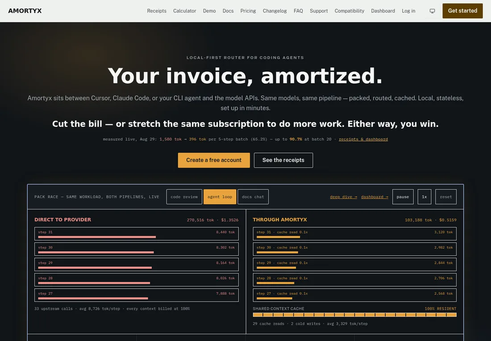
Amortyx
AI request optimization, enforcement, and model routing for coding workflows.
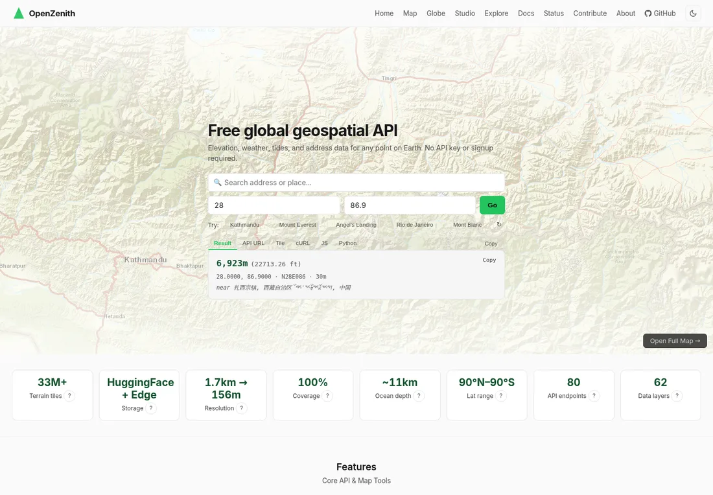
OpenZenith
Open elevation data, geospatial APIs, and mapping tools.
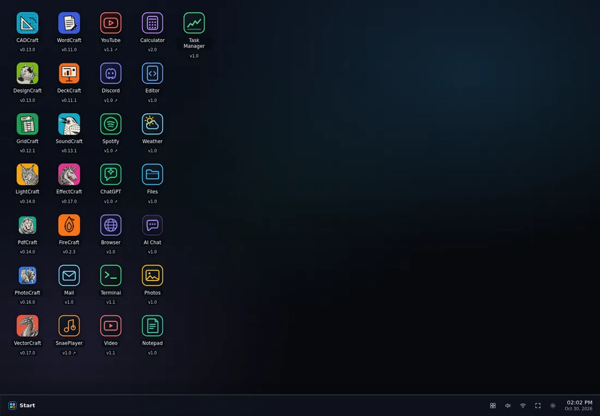
ArtCraft WebOS
A browser desktop concept for creative applications.
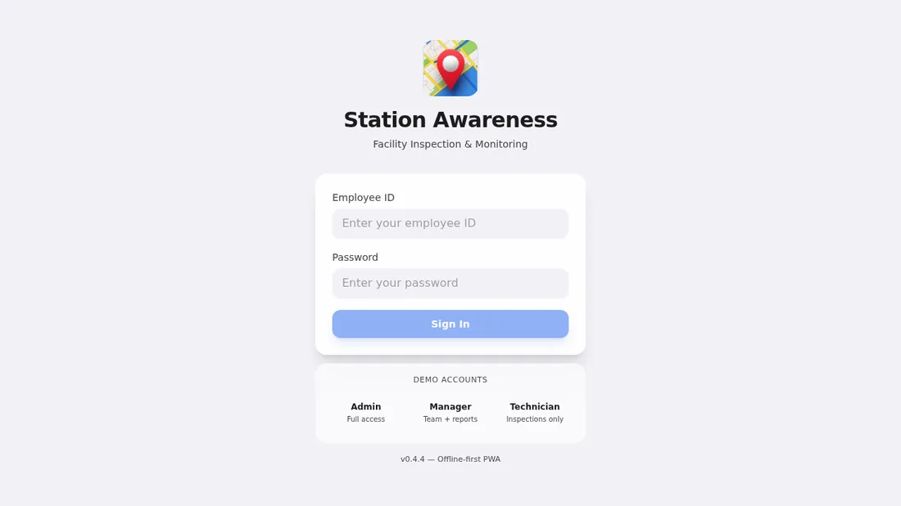
Station Awareness
Offline-first facility inspection and monitoring.
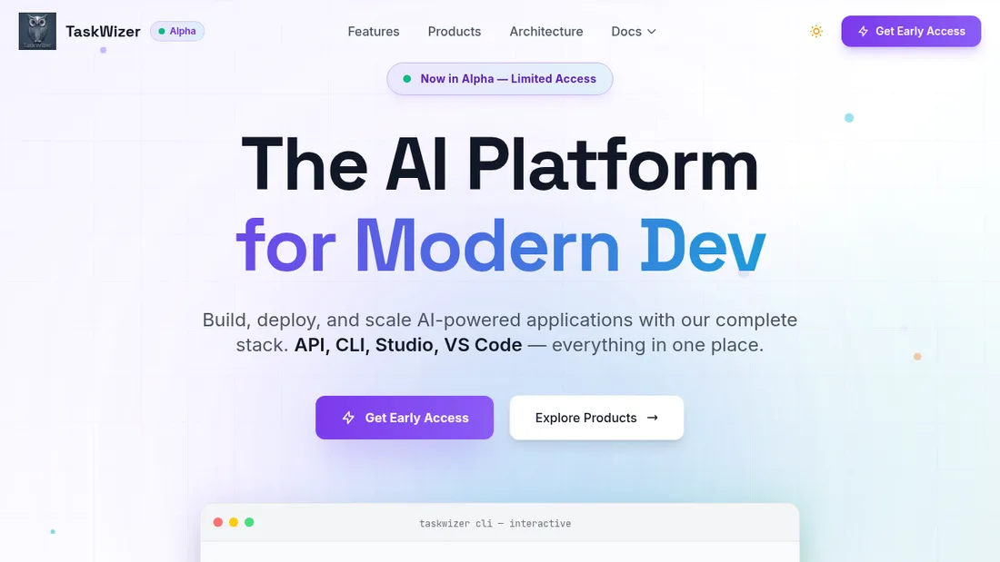
TaskWizer
An AI development platform for planning and shipping software.
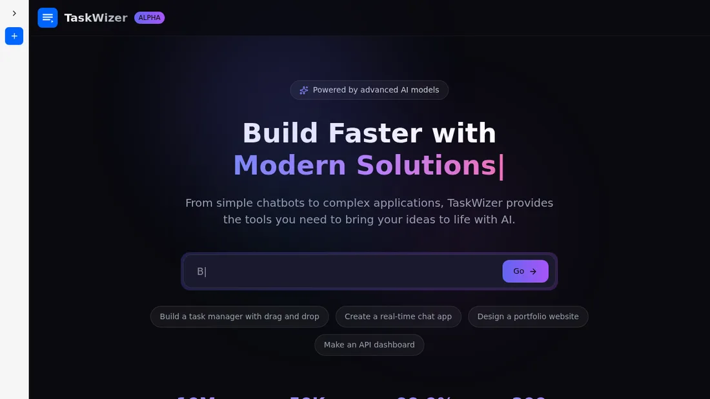
TaskWizer Studio
A browser workspace for AI-powered applications and workflows.
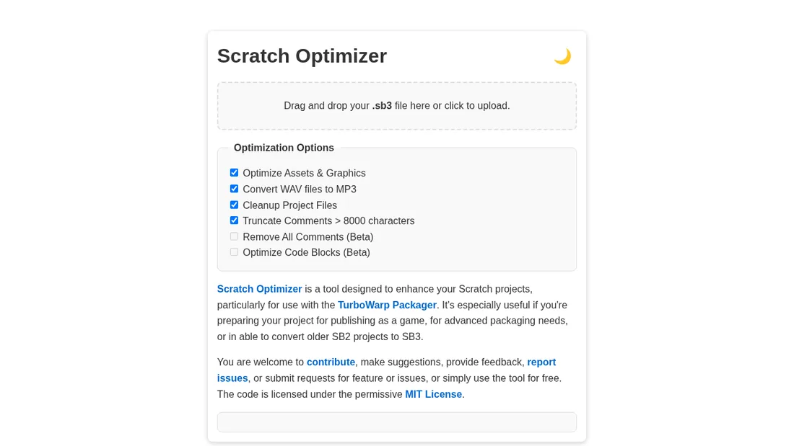
Scratch Optimizer
Clean and optimize Scratch projects before sharing.
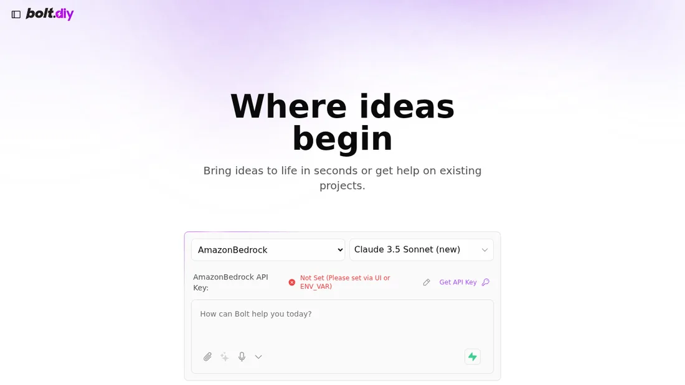
Bolt
Browser-based AI app prototyping. A provider API key is required.

ONNX Chat
Browser chat for ONNX models with tools and notes.
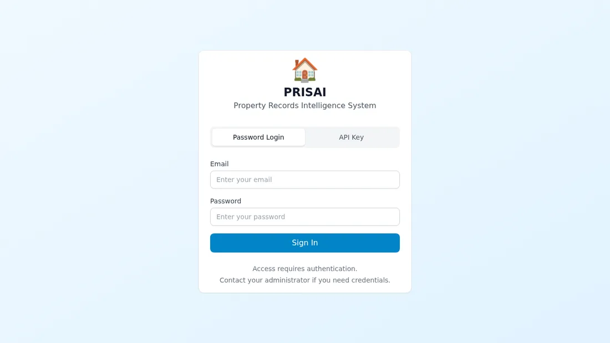
PRISAI
Property-records intelligence system; public demo sign-in is required.
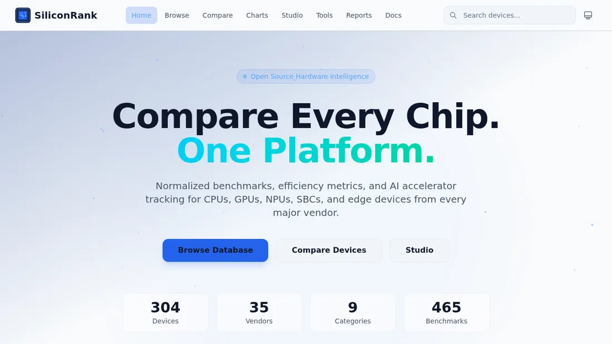
SiliconRank
Open hardware intelligence for comparing CPUs, GPUs, and AI accelerators.
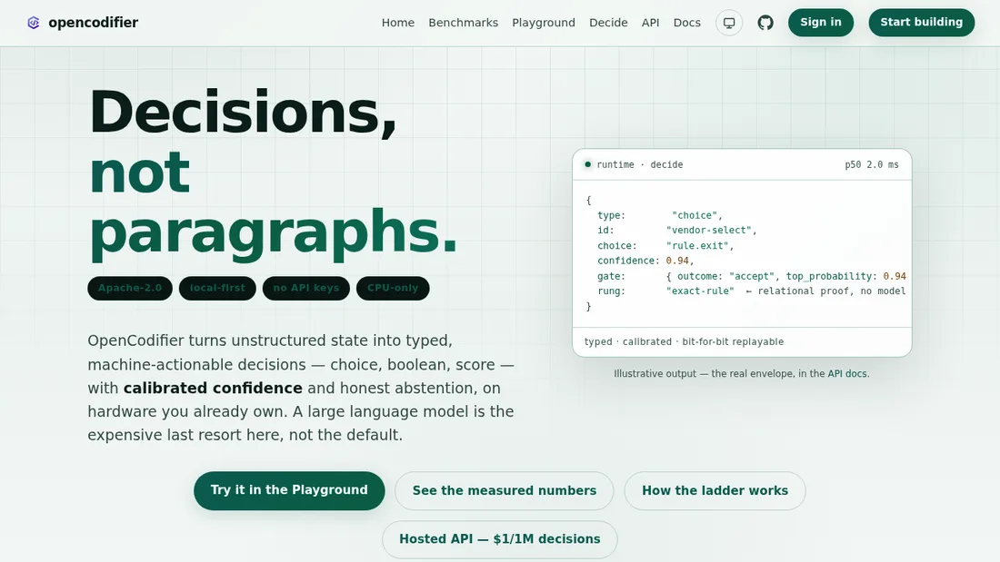
OpenCodifier
Fast, local-first code intelligence and deterministic decision tooling.
This is a static, cloneable gallery. Screenshots live in examples/assets/screenshots/; no external image service, profile API, analytics, or credentials are required.